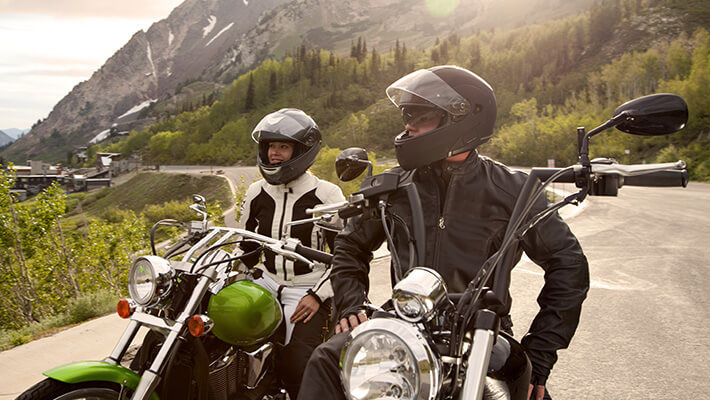
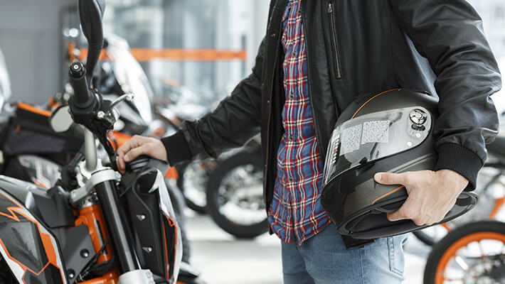

La importancia de usar el casco cuando viajas en moto
La motocicleta es uno de los medios de transporte más populares del mundo.
Todos los días, millones de personas la usan para desplazarse, practicar un deporte o diversión.
Lamentablemente, la popularidad de las motos no las hace más seguras y muchos motociclistas fallecen
o se lesionan gravemente en accidentes.
Tomar las medidas de seguridad adecuadas puede marcar la diferencia entre
la vida o la muerte para un amante de las motocicletas. Se ha comprobado que el uso
del casco puede salvar la vida tanto del conductor como del pasajero porque reduce el impacto de las
lesiones o daños en el cráneo. Los cascos salvan las vidas de los motociclistas al evitar o amortiguar
golpes y heridas en la cabeza, quienes no lo utilizan tienen más probabilidades de muerte o sufrir lesiones
permanentes.

Porque Es Importante Usar Casco Cuando Viajas En Moto
En un accidente, el casco absorbe gran parte de la energía del impacto con su estructura y el cerebro golpea contra
las paredes del cráneo con menos fuerza. Además, disminuye la fuerza del impacto hacia una superficie más grande,
por lo que la energía del choque no se concentra en una sola parte de la cabeza. Finalmente, actúa como una barrera
que evita el contacto entre el cráneo y el objeto del impacto (por ejemplo, el suelo u otro auto).

Al momento de escoger un casco, su aspecto físico y estética es lo que menos importa. Debes pensar en qué tipo de
moto conduces, las calles de tu ciudad, tus cualidades físicas, entre otros factores. Al comprar un casco, debes
tener en cuenta que hay dos clases principales con niveles diferentes de protección: tres cuartos e integral.
Otros Elementos
Otro elemento a tener en cuenta son los guantes, su uso no está tan difundido pero te protegen frente al frío, el c
alor y, si cuentas con unos guantes de calidad, de quemaduras por el asfalto si te caes de la moto.
Por otro lado, es recomendable circular siempre con chaqueta y pantalones que cubran lo máximo posible tu cuerpo
para protegerte frente a los daños que siempre suponen caerte de la moto, y de otros daños menos graves como las
quemaduras del sol o del viento. Existen en el mercado chaquetas y pantalones orientados a la protección del motorista
que refuerzan las zonas de las rodillas, codos, hombros o espinillas para reducir los daños en caso de impacto contra
cualquier elemento que nos podamos encontrar en la carretera.
Existen otras prendas destinadas a la protección del motorista y que responden perfectamente a la cuestión
¿por qué debo llevar elementos de protección?: Porque con ellas reducirás al máximo los perjuicios de una
caída. Entre ellas destacamos las siguientes:
Botas: Protegen tus pies y tus tobillos. Las más recomendadas son las de cuero.
Monos de cuero u otro material resistente: Son más caros pero, si puedes, es mejor invertir en tu seguridad.